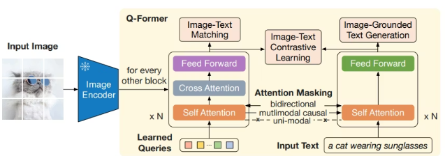

1/3にVLMの手法でBlip-2に採用されている手法 Q-Former について説明しました。
Q-FormerがVLMとして、画像の情報を上手に抽出できる理由にフォーカスをあてて説明しました。
ですが、その際は内部構造の実装法には触れていませんでした。
今回は改めて内部構造の実装法について扱っていきたいと思います。
前回のおさらいを兼ねて、Q-Formerの構成を簡単に説明します。
Q-Formerの最大の特徴は、入力として「固定された32個（モデルにより数は異なる）の特別なベクトル」を持つことです。
クエリが画像情報を実際に「吸い上げる」ための計算メカニズムです。
Q-Formerは、内部のアテンション計算（Self-Attention）において、画像由来のクエリと、テキスト入力を同じ層で同時に処理できる構造を持っています。
絵で見てみると尚、わかりやすいと思います。
Q-Formerは大きく3パートで構成されます。
1. Query Tokens
絵の右下にある"Learned Queries"の部分です。
動作のポイントは以下です。
この要素によって、画像エンコーダより取得した視覚情報より、重要なエッセンスを抽出することが出来るようになります。
一旦以下のようにQと置きます。
Q = {q1, q2, ..., qQ} with Q typically in [16, 64]
2. Self-Attention Block
1で入力されたクエリ自身がアテンション機構を通して情報交換されます。
QがSelfAttnに通されるので以下のように表現出来ます。
Q' = SelfAttn(Q)
この処理で想定される効果は次の通りです。
3. Cross-Attention Block (to Vision Encoder)
CrossAttentionは:
という役割分担になっています。
ViTに全ての情報保持を委譲し、Q-Formerが選択的に抽出する構図になります。
V = VisionEncoder(image)
K, V = proj(V)
Q'' = CrossAttention(Q', K, V)
この一連の処理により、テキストに比べて情報密度が低い画像情報より、エッセンスを抜き出します。
結果、LLMに不要な低レベルの視覚情報ではなく、画像の本質となる意味を届けることが出来るようになります。
2と3の補足
実際にはSelf-AttentionとCross-Attentionは交互に積層されることになります。
ですので、実際のモデルは以下の処理がされています。
for L in layers:
Q = SelfAttention(Q)
Q = CrossAttention(Q, V)
Q-Formerが登場する前は、画像とLLMを単純に線形層（1層のニューラルネット）で繋ぐだけの手法が主流でした。しかし、それだけでは情報の整理が不十分でした。
Q-Formerは、 「トランスフォーマーを使って、画像から言語的な意味を抽出する」 というプロセスを挟むことで、巨大なLLMを効率的、かつ賢く「目」を持たせることにつながりました。
先程説明した処理フローを整理すると次の通りです。
image
↓
Vision Encoder (ViT)
↓ (K,V)
Q (learnable)
↓
Q-Former (SelfAttn + CrossAttn stack)
↓
Projected tokens
↓
Flan-T5 (Decoder)
↓
Caption text
実装コードを以下のレポジトリに保存しました。
使うLLMはT-Flan。vision-encoderはViTを用います。
動作にあたり説明です。
1. 関係ライブラリのインストール
!pip install transformers accelerate timm einops
2. q-former
レポジトリの"q-former.py"の内容をコーディング下さい。
3. モデルの構築
レポジトリの"model.py"の内容をコーディング下さい。
4. 動作
レポジトリの"predict.py"の内容をコーディング下さい。
※predict.pyのurlは適切なurlに変更ください。
今回はモデルの実装の一連をしました。
q-formerは未だLLMとViTに合わせたチューニングをしていないので、あまり良い出力は、現段階では得られないはずです。
補足情報としてQ-Formerを採用したVLMについて説明します。
Q-Formerは、2023年にSalesforceが発表したBLIP-2で初めて導入され、その圧倒的な効率の良さから、その後多くの有名なマルチモーダルモデル（VLM）に採用されました。
代表的なモデルとその特徴を整理して紹介します。
Q-Formerを世に知らしめた最初のモデルです。
BLIP-2をさらに進化させ、「指示（命令）」に従う能力を高めたモデルです。
VicunaというLLMとBLIP-2のビジョン部分を組み合わせた、初期の対話型マルチモーダルAIの代表格です。
静止画だけでなく、**動画（ビデオ）**を理解するモデルにもQ-Former（またはその派生技術）が使われています。
特定の専門分野向けにカスタマイズされたモデルでも採用例が多いです。
多くの研究者がQ-Formerを採用する理由は、一言で言えば 「コスパと精度のバランス」 です。
| 理由 | 内容 |
|---|---|
| 情報の集約力 | どんなに情報量が多い画像/動画でも、固定数（32個など）のトークンに圧縮できる。 |
| 学習の軽さ | 数十億、数千億パラメータのLLMをいじる必要がなく、Q-Former（約1.8億パラメータ）だけを訓練すれば良い。 |
| プラグイン的性質 | お気に入りの「最強の目（ViT）」と「最強の脳（Llama 3等）」を後付けで合体させることができる。 |
今回はVLMで効果的に視覚情報をLLMに渡す手法であるQ-Formerを扱いました。
この手法の良い点はLLMには一切手を付けず、かつ、LLMに合わせた視覚情報の抽出を出来るようになるということにあります。
また、得られる視覚情報も、単純な全結合では得られないような恣意を持ったものとなるため、より、LLMの性能を引き出すことが可能となります。
実装にあたり疑問あれば、コメント頂ければと思います。
記事を最後まで読んでくださってありがとうございます。
記事の内容を読んで頑張れと思っていただいた読者様、是非、読者になって今後も応援してください。
記事を最後まで読んでくださってありがとうございます。
記事の内容を読んで頑張れと思っていただいた読者様、是非、読者になって今後も応援してください。